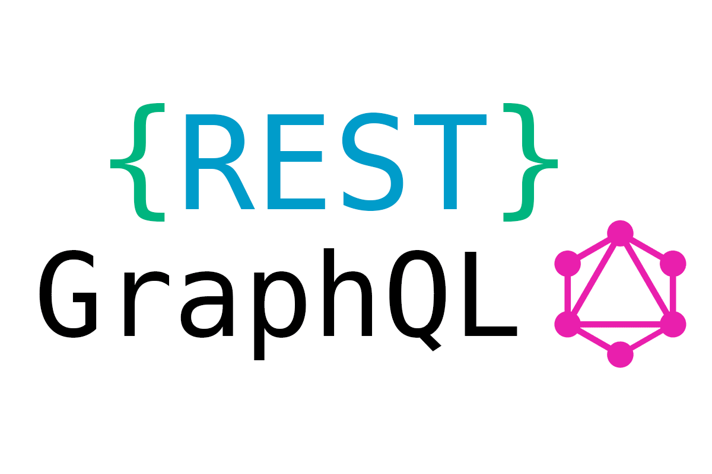
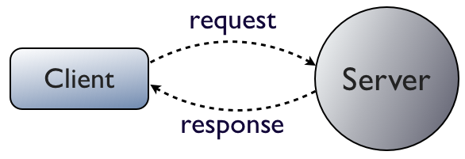
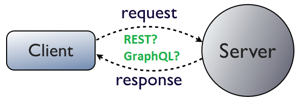

Ersetzen von REST durch GraphQL
Bachelor-Thesis Abschlussvortrag
Lukas Kugler, 23.03.2017
Übersicht
- Grundlagen zu REST
- GraphQL: Einführung
- GraphQL: Syntax
- Vergleich der Schnittstellen
- Demo
Einordnung
 Grundlagen zu REST
- "Representational State Transfer"
- Programmierparadigma
- Existent seit 2000, erst später intensiv eingesetzt
Eigenschaften von REST
- Ziel: Vereinheitlichung der Kommunikation zwischen Webservices
- Einheitliche Schnittstelle
- Ressourcenzentriert
- HTTP-Methoden
HTTP-Methoden
- GET: lesen
- PUT: erstellen
- POST: aktualisieren
- DELETE: löschen
Wie sieht eine REST-Schnittstelle aus?
Benutzer abfragen:
GET /api/users/1
Bestellungen eines Benutzers abfragen:
GET /api/users/1/orders
Overhead
- Zurückgeben aller Artikeldetails mit der User-Anfrage?
- Stellen einer zusätzlichen Anfrage?
GraphQL: Einführung
- Abfragesprache ("Query Language")
- Entwickelt von Facebook
- Verließ "Technical Preview" im September 2016
GraphQL: Einführung
Design-Prinzipien
HierarchischEine GraphQL-Anfrage an sich ist eine hierarchische Anordnung von Feldern. Die Anfrage hat dieselbe Form, wie die Daten, die sie zurückgibt.
ProduktorientiertGraphQL ist speziell für die Anforderungen von Views und für Frontend-Entwickler gedacht.
Client-spezifizierte AnfragenDie Spezifikation für Anfragen ist sehr granular im Client definiert, nicht im Server.
AbwärtskompatibelDurch die Clientspezifizierten Anfragen ist eine Abwärtskompatibilität der API einfacher zu realisieren.
Strukturierter, beliebiger CodeGraphQL stellt dem Server eine Struktur zur Verfügung und öffnet einzelne Felder, die mit beliebigem Code hinterlegt sind.
Protokoll der ApplikationsschichtGraphQL ist ein Protokoll der Applikationsschicht und benötigt kein bestimmtes Transportprotokoll.
Streng TypisiertAnfragen können vor ihrer Ausführung auf syntaktische und und typbezogene Korrektheit überprüft werden.
IntrospektivClients und Tools können das Typsystem mit GraphQL-Syntax selbst abfragen.
GraphQL: Umsetzung
- Gesamte Schnittstelle über einen Endpunkt erreichbar
- Server öffnet bestimmte Einstiegspunkte
- GraphQL-String als Payload in der Anfrage
- String als Antwort (JSON)
- Alle Ressourcen und Anfragen streng typisiert
GraphQL: Syntax
Das Schema & Resolver
- Legt fest, welche Anfragen an den Server gestellt werden können
- Legt die Form der Daten fest
- Legt fest, was der Server an den Client als Antwort zurückgibt
Das Schema: Typen
type User {
firstName: String!
lastName: String!
orders: [Order]
}
type Query {
user(id: id!): User
}
- Werden immer aufgerufen, wenn ein Typ abgefragt wird
- Beliebiger Code
- Für Skalare üblicherweise Zugriff auf Datenbank
user: async (obj, args, context) => {
return await Users.findById(args.id);
}
User: {
friends: async (user) => {
return await Users.getUsersById(user.friends);
}
}
user {
firstName
}
... und die Antwort:
{
"data": {
"user": {
"firstName": "Lukas"
}
}
}
user(id: "1") {
firstName,
lastName,
orders(year: "2016") {
sum
date
status
articles {
name
price
category
}
}
}
"user": {
"firstName": "Lukas",
"lastName": "Kugler",
"orders": [
{
"sum": "3",
"date": "07-01-2016"
"status" "versandt"
"articles": [
{"name" : "Bleistift",
"price" : "2",
"category" : "Schreibwaren"
},
{"name" : "Block",
"price" : "1",
"category" : "Schreibwaren"
}
]
},
{
"sum": "15",
"date": "07-01-2016"
"status" "in Bearbeitung"
"articles": [
{"name" : "USB-Stick 32GB",
"price" : "10",
"category" : "Elektronik"
},
{"name" : "AAA-Batterien 6er Pack",
"price" : "5",
"category" : "Elektronik"
}
]
},
]
}
query userById($id: Int) {
user(id: $id) {
firstName
lastName
}
}
Antwort:
{
"data": {
"user": {
"firstName": "Lukas",
"lastName": "Kugler"
}
}
}
mutation addNewUser($firstName: String, $lastName: String!) {
addUser(firstName: $firstName, lastName: $lastName) {
firstName
lastName
}
}
{
"firstName": "Max",
"lastName": "Mustermann"
}
Vergleich
Typisches Benutzer-Objekt
- id (String)
- username (String)
- firstName (String)
- lastName (String)
- statusMessage (String)
- password (String)
- friends ([User])
- admin (Boolean)
| Auslesen aller Benutzer | GET /api/users |
| Auslesen eines Benutzers anhand seiner ID | GET /api/users/ID |
| Hinzufügen eines Benutzers | POST /api/users |
| Löschen eines Benutzers | DELETE /api/users/ID |
| Ändern des Passworts | POST /api/users/ID/password |
| Ändern der Statusnachricht | POST /api/users/ID/statusMessage |
| Einen Freund hinzufügen | POST /api/users/ID/friends |
| GET /api/users | Eine Query, welche ein Array aller User-Typen zurückgibt |
| GET /api/users/ID | Eine Query, welche ein User-Objekt anhand seiner ID zurückgibt |
| POST /api/users | Eine Mutation, welche ein User-Objekt erzeugt |
| DELETE /api/users/ID | Eine Mutation, welche ein User-Objekt anhand seiner ID löscht |
| POST /api/users/ID/password | Eine Mutation, welche das Feld Password eines Users ändert |
| POST /api/users/ID/statusMessage | Eine Mutation, welche das Feld statusMessage eines Users ändert |
| POST /api/users/ID/friends | Eine Mutation, welche dem Feld friends eines Users einen Eintrag hinzufügt |
Authorisierung (Express)
- Über Middleware mit JSON Web Tokens
- Endpunkt offen, geschützt wird in den Resolvern
- Query- und Field-Level Auth möglich dank Custom Resolvern
- Verschiedene Rechte-Ebenen möglich (Admin, User)
- Login: JWT kann über GraphQL abgefragt werden
Datenlast
user(id: ID) {
firstName,
lastName,
statusMessage,
friends {
firstName
lastName
}
} Datenlast
| REST | GraphQL |
|---|---|
|
Anfrage mit User-ID 5 Strings 1 Bool Array aus IDs Pro Freund: Anfrage mit ID 5 Strings 1 Bool Array aus IDs |
Anfrage mit GraphQL-Query-String 3 Strings Pro Freund: 2 Strings |
- Versionierung üblicherweise, da Client Daten erhält mit denen er nichts anfangen kann
- In GraphQL merkt der Client nichts von neuen Feldern
- Best Practice: Versionslose API
- Felder können @deprecated markiert werden
- Änderungen in der API können in hoher Frequenz vorgenommen werden
Subscriptions
- Push von Live-Daten vom Server an Clients
- PubSub-System
- Client sendet Anfrage mit Schlüsselwort
- Server reagiert auf Events (Queue, Timer, Änderungen)
- GraphQL-Syntax mit allen Vorteilen (Selektion)
Für Entwickler
- Einfaches Mocking
- GraphiQL
Demo!